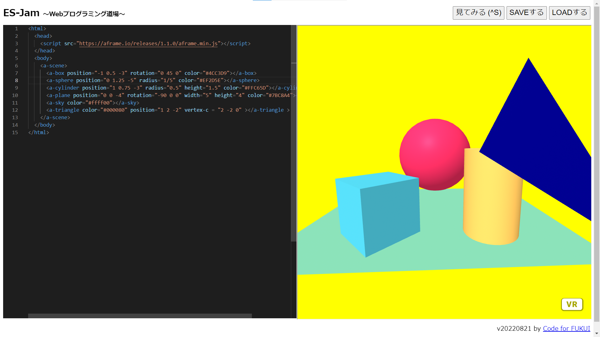
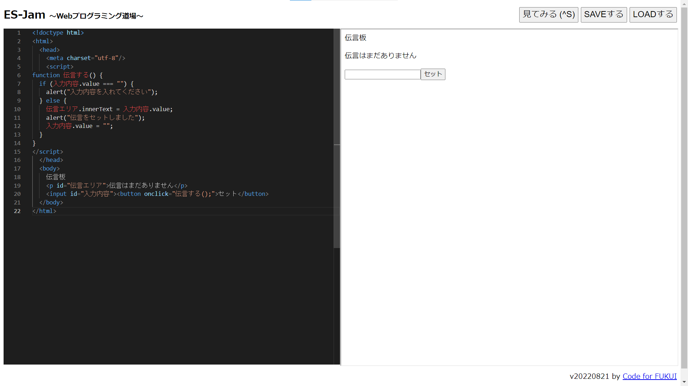

第3週目
3-1 JavaScript体験：VR空間を作る

VR空間
1.内容
Webプログラミング道場を使ってVR空間のプログラムを作成した。
A-FrameにあるJavaScriptのプログラムをコピーし、そこに図形を加えたり、色を変更したりした。
2.感想
Webサイトでプログラムを作成し実行できるのは知っていたが、3D空間も表示でき驚いた。
また、図形の位置調整が3D空間だったので、複雑で難しかった。
3-2 JavaScript体験：伝言プログラムを作る

伝言板
1.内容
Webプログラミング道場を使って伝言板のプログラムを作成した。
プログラムにはJavaScriptとHTMLを使用した。
伝言を入力して「セット」を押すと伝言が表示される。
2.感想
JavaScriptとHTMLのそれぞれに役割があって面白いと思った。
どんな処理をしたいかで言語を適切に選択する必要があると感じた。
3-3 JavaScriptプログラムの３次元空間の体験
1.内容
VRゴーグルを装着して、3次元空間を体験した。
コントローラを使って、オブジェクトを掴んだり、球を射出したりした。
2.感想
JavaScriptのプログラムをVRゴーグルで見れることに驚いた。
また、実際に自分がそこにいるような感覚になり、面白かった。